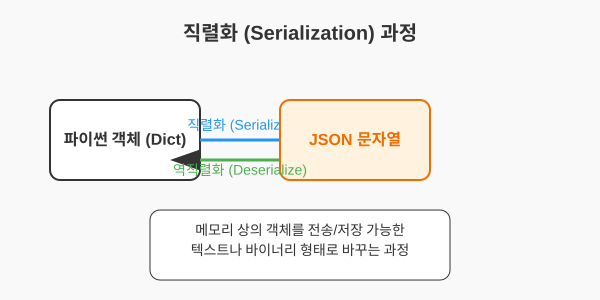

5주차: 데이터 처리 - JSON과 XML, 그리고 직렬화 📦
우리는 지난 시간 API를 통해 데이터를 주고받았습니다. 이때 사용한 JSON은 단순한 텍스트일 뿐입니다. 하지만 프로그램 내부에서는 이를 딕셔너리나 리스트 같은 ‘객체’로 다뤄야 합니다. 이번 시간에는 데이터를 저장/전송 가능한 형태로 바꾸는 직렬화와 대표적인 포맷인 JSON, XML을 배웁니다.
1. 직렬화 (Serialization)란?
직렬화는 메모리 속에 존재하는 객체(Object)를 파일에 저장하거나 네트워크로 전송할 수 있도록 텍스트나 바이너리 형태로 변환하는 과정을 말합니다. 반대로 변환된 데이터를 다시 객체로 만드는 것을 역직렬화(Deserialization)라고 합니다.

- 직렬화: 파이썬 딕셔너리 $\rightarrow$ JSON 문자열
- 역직렬화: JSON 문자열 $\rightarrow$ 파이썬 딕셔너리
2. JSON (JavaScript Object Notation)
JSON은 현재 전 세계적으로 가장 많이 쓰이는 데이터 교환 포맷입니다. 사람이 읽기 쉽고, 기계가 파싱하기 매우 빠르기 때문입니다.
2.1 파이썬에서 JSON 다루기 (json 모듈)
파이썬의 json 모듈을 사용하면 딕셔너리와 JSON 문자열을 서로 변환할 수 있습니다.
import json
# 1. 파이썬 객체 -> JSON 문자열 (직렬화)
user_data = {"name": "지니", "age": 15, "city": "Seoul"}
json_string = json.dumps(user_data)
print(json_string) # 결과: '{"name": "지니", "age": 15, "city": "Seoul"}'
# 2. JSON 문자열 -> 파이썬 객체 (역직렬화)
json_input = '{"name": "철수", "age": 17, "city": "Busan"}'
user_obj = json.loads(json_input)
print(user_obj["name"]) # 결과: 철수
json.dumps(): 객체를 문자열로 변환 (Dump String)json.loads(): 문자열을 객체로 변환 (Load String)json.dump()/json.load(): 파일에 직접 쓰고 읽을 때 사용
3. XML (Extensible Markup Language)
XML은 HTML과 비슷하게 태그(< >)를 사용하여 데이터를 구조화하는 포맷입니다. JSON보다 무겁고 복잡하지만, 데이터의 의미를 더 명확하게 정의할 수 있어 오래된 시스템이나 기업용 설정 파일에서 여전히 사용됩니다.
3.1 XML 예시
<user>
<name>지니</name>
<age>15</age>
<city>Seoul</city>
</user>
4. 🔍 Deep Dive: JSON vs XML vs Pickle
데이터를 직렬화하는 방법은 여러 가지가 있습니다. 상황에 맞는 선택이 중요합니다.
| 포맷 | 특징 | 장점 | 단점 |
|---|---|---|---|
| JSON | 텍스트 기반, 키-값 쌍 | 가볍고 범용적임 (표준) | 복잡한 객체 표현에 한계 |
| XML | 텍스트 기반, 태그 구조 | 구조가 엄격하고 상세함 | 매우 무겁고 파싱이 느림 |
| Pickle | 파이썬 전용 바이너리 | 파이썬의 모든 객체 저장 가능 | 파이썬에서만 사용 가능, 보안 위험 |
⚠️ 주의: Pickle의 보안 위험
pickle 모듈은 파이썬 객체를 그대로 저장하므로 매우 편리하지만, 신뢰할 수 없는 곳에서 받은 pickle 파일을 로드하면 악성 코드가 실행될 위험이 있습니다. 외부 데이터 교환에는 반드시 JSON을 사용하세요.
✍️ 이번 주 연습 문제
문제 1. 자신의 프로필 정보(이름, 나이, 취미 리스트, 좋아하는 음식 딕셔너리)를 딕셔너리로 만들고, 이를 profile.json 파일로 저장한 뒤 다시 읽어오는 프로그램을 작성해 보세요.
문제 2. JSON 문자열에서 특정 키의 값만 추출하여 출력하는 함수 get_value(json_str, key)를 구현해 보세요.
문제 3. (심화) pickle 모듈을 사용하여 파이썬의 클래스 인스턴스를 파일로 저장하고 다시 불러오는 코드를 작성해 보세요. 그리고 왜 이 방식이 JSON보다 강력하지만 위험한지 서술해 보세요.
🔍 Deep Dive: XML 트리 구조(DOM/SAX)와 JSON 직렬화의 직관성 대결
웹 세상에서 데이터를 구조화하여 전송하는 방식은 크게 XML과 JSON이 지배해 왔습니다.
- XML: 태그 기반의 트리 구조로 엄격한 유효성 검사(Schema)가 가능하지만,
<name>Jiny</name>처럼 여는 태그와 닫는 태그가 반복되어 패킷 용량이 무거워지고 가독성이 떨어집니다. 파이썬은 DOM(전체 메모리 로드) 방식과 SAX(스트리밍 파싱) 방식으로 XML을 제어합니다. - JSON: 자바스크립트 객체 표기법에서 유래해 키와 값의 쌍으로만 이루어져 있으며 패킷이 가볍고 인간이 읽기 극단적으로 편합니다. 파이썬 딕셔너리와 1:1로 정확하게 매핑되는 완벽한 호환성 덕분에 현대 웹 서비스와 데이터 처리의 절대 강자가 되었습니다.
☕ Java vs Python 스나이퍼 비교
JSON 직렬화 및 파싱 처리의 대조
- Java: JSON을 내장 타입으로 인지하지 못합니다. 따라서 Jackson 이나 Google Gson 같은 라이브러리를 주입받아 DTO(Data Transfer Object) 자바 클래스를 먼저 매핑 선언하고, 리플렉션을 거쳐서 직렬화/역직렬화(Serialization/Deserialization)를 실행해야 하므로 코드 구조가 다소 무겁습니다.
- Python: 내장 모듈
json을 사용하여json.dumps(dic_obj)단 한 줄로 텍스트 직렬화를 완성하고,json.loads(text)한 줄로 파이썬 딕셔너리 객체로 환원시킬 수 있어 JSON 처리가 세상에서 가장 간결합니다.
🎧 Vibe Coding
🗣️ 학생 프롬프트 (AI에게 이렇게 명령해 보세요): “파이썬으로 여러 학생의 성적 정보(이름, 국어, 영어 점수)가 담긴 복잡한 파이썬 딕셔너리를 작성해 줘. 그리고 이 데이터를
json.dump를 사용하여 로컬student.json파일에 쓰기(직렬화)하는 파이썬 코드를 구현해 줘.”
코딩 영단어 학습 📝
Serialization: 직렬화, 마샬링. (메모리상에 떠 있는 객체 데이터를 파일 저장이나 네트워크 전송이 가능한 평면적인 바이트 스트림(텍스트) 형태로 변환하는 가공 절차입니다.)Deserialization: 역직렬화. (직렬화되어 수신된 텍스트나 바이트 스트림 데이터를 해석하여, 메모리에 객체 인스턴스로 복원하고 활성화하는 가공 작업입니다.)DOM(Document Object Model): 문서 객체 모델. (XML이나 HTML 문서 전체를 메모리로 통째로 로드하여 노드 트리 형태로 구성해 읽고 편집할 수 있게 구조화한 프로그래밍 모델입니다.)
📖 교재 상세 학습: 69 탐정의 비밀 돋보기: 기초 패턴 만들기 (Meta Characters)
69 탐정의 비밀 돋보기: 기초 패턴 만들기
파이썬에서 re (Regular Expression의 약자) 모듈을 불러오면(import re), 우리는 텍스트를 검색하는 강력한 특수 언어를 쓸 수 있습니다. 이 언어의 핵심은 바로 글자가 아니라 규칙을 의미하는 메타 문자(Meta Character)라는 비밀 기호들입니다.
1. 어떤 글자를 찾을래? (문자 클래스)
[ ](선택): 대괄호 안의 문자 중 어느 하나라도 맞으면 합격![abc]: “a, b, c 중 하나라도 있나?”[a-z]: “영어 소문자 아무거나 다 나와!”[가-힣]: “한글 글자는 다 걸려라!”
[^ ](반대/부정): 괄호 안에^기호가 먼저 들어가면 “이것 빼고 다 가져와!”라는 뜻입니다.[^0-9]: “제발 숫자만 빼고 전부 다!”
- 단축키 (축약 기호): 매번
[0-9]라고 쓰기 귀찮아서 만든 친절한 단축키들!\d: 숫자 ([0-9]와 완전 동일, digit)\D: 숫자가 아닌 것들 (Non-digit)\s: 띄어쓰기, 엔터(\n), 탭(\t) 같은 공백들 (space)\w: 알파벳, 한글, 숫자 (특수문자 및 공백 제외, word)
2. “도대체 몇 개나 있어?” (수량자)
내가 찾는 문자가 연속으로 반복될 때는 수량자 기호를 뒤에 슬쩍 붙여줍니다.
*: 0개 이상 (아예 없어도 합격이고, 엄청 많아도 OK)+: 1개 이상 (무조건 1개는 있어야 해!)?: 0개 아니면 1개 (있어도 그만, 없어도 그만 - 선택적 옵션){m, n}: 딱 m개부터 최대 n개까지만 허용! (예:\d{3,4}→ 숫자 3자리 혹은 4자리)
import re
# "a 다음에 b가 무조건 1개 이상(+) 있는 패턴"
# compile()은 내 돋보기 규칙을 세팅하는 작업입니다.
pattern = re.compile("ab+")
print(pattern.search("abbbb").group()) # "abbbb" 한 번에 싹 다 찾음!
# print(pattern.search("acccc")) # b가 없어서 못 찾고 터짐(None 에러)!
3. 좌표 찍기 (앵커 문자)
내가 찾는 단어가 문장 중간에 있는 건 싫고, 꼭 첫 머리이거나 꼬리에 있어야 할 때 씁니다.
^: 문장의 맨 처음에서만 찾아라! (^Hello: 첫 단어가 Hello인지 검사)- 주의:
[ ]괄호 안의^는 부정이지만, 괄호 밖에서는 ‘문자열의 처음’이라는 뜻입니다!
- 주의:
$: 문장의 맨 끝에서만 찾아라! (Python$: 가장 마지막 단어가 Python인지 검사)
4. 소그룹 묶어 이름표 달기 (Grouping)
전화번호(“010-1234-5678”)를 찾을 때, 전체 번호도 찾고 싶지만 ‘앞자리’, ‘중간자리’, ‘뒷자리’를 나중에 예쁘게 따로따로 빼서 보고 싶다면 필요한 부분을 괄호 ( )로 묶어줍니다. 이것을 그룹화라고 합니다.
import re
# 괄호 3개로 묶어서 그룹 3개를 만듭니다. (숫자뭉치)-(숫자뭉치)-(숫자뭉치)
phone_pattern = re.compile("(\d+)-(\d+)-(\d+)")
result = phone_pattern.search("안녕하세요 제 폰 번호는 010-9999-8888 입니다")
# .group()은 찾은 결과를 꺼내줍니다.
print("전체:", result.group()) # 010-9999-8888
# 괄호별로 순서대로 빼기!
print("1번 그룹(국번):", result.group(1)) # 010
print("2번 그룹(중간):", result.group(2)) # 9999
print("3번 그룹(뒷번):", result.group(3)) # 8888
[!TIP] 괄호 맨 앞에 특별히
?P<이름>을 붙이면 그 그룹에 숫자가 아닌 별명을 지어줄 수 있습니다!(?P<middle>\d+)라고 쓰면, 나중에result.group('middle')이라는 아주 직관적인 이름으로 편하게 값을 꺼낼 수 있답니다.
📖 교재 상세 학습: 70 실전 수사 돌입: re 모듈 함수와 옵션
70 실전 수사 돌입: re 모듈 함수와 옵션
패턴 암호(정규식)를 만들었으면, 이제 본격적으로 거대한 텍스트의 바다에 탐지기를 던져서 물고기를 낚아 올릴 차례입니다.
1. 탐지기 작동 방식 (패턴 검색 함수)
파이썬 re 모듈에는 목적에 딱 맞는 3가지 주요 돋보기 탐지기가 있습니다.
match(패턴, 문자열): 문장의 가장 첫 글자부터 칼같이 맞아야만 인정합니다! 첫 단어가 다르면 중간에 아무리 일치하는 게 있어도 뒤는 쳐다보지도 않고 포기(None)합니다.search(패턴, 문자열): 문장을 처음부터 끝까지 쭉 훑다가 가장 먼저 매칭되는 녀석 딱 1개를 찾으면 뒤도 안 돌아보고 바로 멈춥니다.findall(패턴, 문자열): (가장 많이 씀) 텍스트 전체를 마지막까지 샅샅이 뒤져서 매칭되는 모든 결과를 무더기(리스트)로 주머니에 담아 가져옵니다!
import re
text = "apple, banana, cherry, apple!"
# 1. search는 처음 찾은 사과 하나만 뽑고 퇴근합니다.
print(re.search("apple", text).group())
# 출력: apple
# 2. findall은 모든 사과를 맵 싹쓸이해서 리스트로 줍니다!
print(re.findall("apple", text))
# 출력: ['apple', 'apple']
search나 match로 찾은 결과는 단순히 글자가 아니라 Match 객체라는 마법의 보물상자에 담겨 옵니다. 이 상자 안에는 찾은 글자 값(group()), 텍스트 속성에서의 정확한 위치(span(), start(), end()) 같은 고급 정보가 듬뿍 들어있습니다.
2. 탐지 레이더 업그레이드 (컴파일 옵션 플래그)
re.compile()로 패턴을 미리 만들어둘 때, 뒤에 특별한 마법 부품(옵션 플래그)을 붙여주면 훨씬 똑똑해집니다.
re.I(re.IGNORECASE): 대문자/소문자를 쿨하게 무시합니다! (‘A’를 찾으라 하면 ‘a’도 같이 찾아줌)re.M(re.MULTILINE): 엔터(\n)로 여러 줄이 된 삼행시 같은 글을 검사할 때, 텍스트 전체의 처음/끝이 아니라 ‘각 줄’의^처음과끝$을 따로따로 분리해서 다 검사해줍니다.re.S(re.DOTALL): 기본적으로 마침표(.) 기호는 줄바꿈(\n) 문자를 제외한 모든 것을 뜻하지만, 이 옵션을 켜면 줄바꿈 문자까지 자비 없이 포함시켜서 문자 그대로 ‘모든 것’을 찾아버립니다.
import re
# 'python'을 찾을 건데, 대소문자 무시(re.I) 옵션을 켰습니다!
pattern = re.compile("python", re.I)
result = pattern.search("I love PYTHON and PyTHon!")
print(result.group()) # 대문자 PYTHON을 거뜬히 찾아냅니다!
3. 찾아서 곧바로 묻어버리기! (sub)
데이터 전처리 과정에서 너무나도 강력한 함수입니다. 단순히 찾는 걸 넘어서, 찾은 패턴의 글자들을 원하는 ‘다른 글자’로 흔적도 없이 싹 바꿔버리는 re.sub(패턴, 바꿀문자, 문자열) 함수입니다. 메모장이나 한글 파일의 ‘찾아 바꾸기’보다 100배는 더 훌륭합니다!
import re
secret_note = "내 비밀번호는 1234, 네 비밀번호는 5678 이다!"
# 모든 숫자의 덩어리(\d+)를 찾아서, 강제로 "***" 로 마스킹(치환)해버립니다!
safe_note = re.sub("\d+", "***", secret_note)
print(safe_note)
# 출력: 내 비밀번호는 ***, 네 비밀번호는 *** 이다!
정규 표현식은 처음 배울 때는 마치 외계어처럼 보여서 조금 까다롭지만, 한 번 익혀두면 수십 줄짜리 지저분한 파이썬 if-else 코드를 단 한 줄로 깔끔하게 썰어버리는 놀랍도록 아름다운 마법의 도구랍니다! 데이터 과학이나 웹 백엔드 개발을 한다면 절대 피할 수 없는 필수 과목입니다.
📖 교재 상세 학습: 73 편지 봉투에 담아 통신하기: JSON 데이터 핸들링
73 규격화된 편지 봉투: JSON 인코딩과 파일 저장
이 세상 수많은 컴퓨터 서비스(웹사이트, 모바일 앱 등)끼리 정보를 통신할 때는 각자의 언어(파이썬, 자바 등)가 달라도 서로 알아먹을 수 있는 아주 표준화된 텍스트 편지가 한 장 필요합니다. 그래서 전 세계 개발자들이 약속한 이 예쁜 표준 규격 편지봉투가 바로 JSON (JavaScript Object Notation)입니다.
JSON 데이터는 사실 파이썬의 딕셔너리와 리스트 구조와 거의 99% 비슷하게 생겼습니다만, 몇 가지 이름의 치환 약속이 있습니다. (예를 들어 파이썬의 True/False/None 은 JSON에서 무조건 소문자인 true/false/null 로 바뀝니다.)
1. 파이썬을 JSON 봉투로 납작하게 누르기 (dumps)
파이썬의 살아 움직이는 복잡한 딕셔너리를, 친구(다른 프로그래밍 언어 서버)에게 인터넷으로 전송하기 위해 빳빳한 단순 텍스트 문자열(JSON)로 납작하게 찍어내는 인코딩 기능이 json.dumps() 입니다. (‘s’는 문자열 string 반환을 의미합니다)
import json
# 평범한 파이썬 딕셔너리 가방
my_bag = {"name": "용사", "level": 10, "is_alive": True, "pet": None}
# 딕셔너리를 JSON 텍스트로 납작하게 인쇄 변환!
json_text = json.dumps(my_bag)
print(type(json_text)) # <class 'str'> 순수한 텍스트 문자열로 바뀜!
# 출력: {"name": "\uc6a9\uc0ac", "level": 10, "is_alive": true, "pet": null}
# (True가 true로, None이 null로 규칙에 맞게 자동 번역된 걸 확인하세요!)
가끔 한글이 \uc6a9\uc0ac 처럼 기괴한 영어(유니코드 방어 시스템)로 다 뭉개져 나온다면, ensure_ascii=False 옵션을 추가해주면 한글 있는 그대로 예쁘게 나옵니다! 보기 좋게 줄바꿈 정렬을 하려면 indent=4 옵션을 씁니다.
2. 낯선 편지 뜯어서 파이썬으로 가공하기 (loads)
인터넷 너머로 날아온 혹은 친구가 던져준 낯선 JSON 문자열을 그냥 글자로 놔두면 아무 작업도 못 합니다. 이걸 다시 우리가 써먹고 마음대로 주무를 수 있는 파이썬 딕셔너리로 뻥 튀겨야 합니다. 이 주문은 json.loads() (로드s) 입니다.
import json
# 다른 기기에서 날아온 덩어리 JSON 텍스트 편지
incoming_json = '{"score": 99, "items": ["sword", "shield"]}'
# 파이썬에서 자유롭게 써먹을 수 있는 딕셔너리/리스트로 부활!
py_data = json.loads(incoming_json)
print(type(py_data)) # <class 'dict'>
print(py_data["items"][0]) # 출력: sword ! (깔끔하게 리스트 인덱싱에 성공!)
3. 디스크 창고에 JSON 파일로 박제 시키기 (dump & load)
dumps나 loads 끝에 붙어 있던 작은 꼬리표 s만 떼어내면, 메모장 허공이 아니라 진짜 컴퓨터 내 하드디스크의 깊은 곳 물리적인 .json 확장자 파일로 바로바로 밀어 넣거나 통째로 파일에서 파이썬 객체로 읽어오는 기능이 됩니다.
import json
user_info = {'name': 'Hojin', 'points': 5000}
# 1. 파일 쓰기 모드('w')로 오픈:
# (한글이 깨지지 않게 보장하는 ensure_ascii=False와 utf-8 옵션 조합 콤보!)
with open('user_data.json', 'w', encoding='utf-8') as file:
# 2. 파이썬 user_info 창고를 JSON으로 압축해 곧바로 file에 밀어 던짐! (dump)
json.dump(user_info, file, ensure_ascii=False, indent=2)
# --- 이제 저장된 창고 파일을 다시 까서 깨워볼까요? ---
with open('user_data.json', 'r', encoding='utf-8') as file:
# 파일 안의 내용을 전부 빨아들여 살아 숨 쉬는 파이썬 딕셔너리로 부활! (load)
loaded_data = json.load(file)
print("불러온 포인트:", loaded_data['points']) # 5000
복잡한 내 웹 서비스의 사용자 정보나 통계 시스템 설정들을 컴퓨터 밖의 외부 시스템과 완벽하게 저장하고 공유하고 싶다면 이 JSON 처리 기술이 여러분의 최고의 구원자가 될 것입니다!
📖 교재 상세 학습: 74 엑셀과 친구 맺기: CSV 데이터 읽고 쓰기
74 엑셀과 친구 맺기: CSV 데이터 읽고 쓰기
엑셀 파일 수준의 방대한 고객 리스트나 물품 데이터를 통째로 다루고 싶을 때, 파이썬에서 가장 빠르고 간편하게 쓰는 포맷이 바로 CSV (Comma-Separated Values, 쉼표로 분리된 값)입니다.
CSV 파일 안에는 이렇게 무미건조한 텍스트만 잔뜩 들어있습니다.
이름,나이,직업
파이썬,12,학생
자바,14,선생님
파이썬의 내장 csv 모듈을 사용하면 이 문장들을 깔끔한 파이썬 리스트나 딕셔너리로 쫙쫙 뽑아낼 수 있습니다.
1. 기본 리스트로 뽑아내기 (reader & writer)
csv.reader를 거치면 한 줄 한 줄이 파이썬 리스트로 변신합니다.
단, 한 번 처음부터 끝까지 다 뽑아내고 나면 텅 비어버리는 반복자(Iterator) 성질이 있으니 주의하세요!
import csv
# 1. 파일 열기 (한글 호환 옵션 장착!)
with open('students.csv', 'r', encoding='utf-8') as f:
# 2. 파이썬 CSV 전용 해독기에 집어넣기
data_reader = csv.reader(f)
# 3. 한 줄씩 빙글빙글 뽑아오기
for row in data_reader:
print(row)
# 1회차 출력: ['이름', '나이', '직업']
# 2회차 출력: ['파이썬', '12', '학생']
새로운 데이터를 CSV 파일로 저장하려면 반대로 csv.writer를 쓰고 .writerow()를 반복해 주면 됩니다! (주의: 줄바꿈이 두 번씩 띄워지는 엑셀 고질병 에러를 막기 위해 newline='' 옵션을 꼭 열 때 넣어주세요!)
2. 헷갈리는 숫자 대신 직관적인 이름표 달기 (DictReader)
위의 기본 리스트로 뽑으면 row[0], row[1]처럼 인덱스 숫자로 찾아야 해서 데이터가 20개가 넘어가면 내가 뭘 뽑는지 헷갈립니다. 맨 첫 줄에 있는 “이름”, “나이” 같은 제목칸(헤더)을 활용해서 진짜 파이썬 객체인 딕셔너리처럼 통째로 뽑아주는 고급 기능이 바로 DictReader 입니다!
import csv
with open('students.csv', 'r', encoding='utf-8') as f:
# DictReader를 쓰면 똑똑한 딕셔너리로 변신합니다!
reader = csv.DictReader(f)
for row in reader:
# 이제 숫자 인덱스(0,1) 대신 아주 직관적인 '이름' 태그로 꺼낼 수 있어요!
print(row['이름'], "학생의 나이는", row['나이'])
3. 쌍둥이 형제, TSV 처리와 커스텀 사투리(Dialect)
쉼표(,) 대신 키보드의 넓은 Tab 키(간격 띄우기)로 데이터를 잘라놓은 파일을 TSV(Tab-Separated Values) 라고 부릅니다.
파이썬에서는 csv 모듈을 그대로 똑같이 쓰되, “선생님, 이 파일은 쉼표가 아니라 탭(\t)으로 잘린 녀석이에요!” 라고 delimiter 문자만 살짝 알려주면 완벽하게 똑같은 위력을 낼 수 있습니다.
import csv
with open('data.tsv', 'r', encoding='utf-8') as f:
# delimiter='\t' 로 탭 구분자라고 파이썬에게 친절히 귀띔해줍니다!
reader = csv.reader(f, delimiter='\t')
for row in reader:
print(row) # 탭으로 예쁘게 찢어져서 리스트로 잘 나옵니다.
만약 여러분의 상사가 쉼표도, 탭도 아닌 뜬금없이 세로막대기(|) 기호로 천만 건의 데이터를 분류해 가져왔다고 쳐봅시다!
이럴 땐 당황하지 말고, 나만의 사투리 규칙을 등록(csv.register_dialect) 해버리면 한 큐에 처리가 가능합니다.
import csv
# 'my_boss_style' 이라는 특수한 CSV 해독 룰을 내가 발명해 냅니다!
csv.register_dialect(
'my_boss_style', # 룰 이름
delimiter='|', # 우리는 쉼표 대신 짝대기(|)로 분리한다!
quotechar='"', # 글자를 묶는 따옴표 표시는 큰따옴표
skipinitialspace=True # 쓰레기 띄어쓰기가 있으면 좀 무시해!
)
# 파일을 열 때 dialect='my_boss_style' 이라고만 말해주면 복잡한 룰이 한방에 적용 완료!
# reader = csv.reader(f, dialect='my_boss_style')
이렇듯 파이썬의 csv 모듈은 전 세계의 어떤 괴랄하고 이상한 형태의 텍스트 표일지라도, 여러분의 구미에 딱 맞게 정제된 데이터 리스트로 번역해 주는 강력한 조력자입니다.
📖 교재 상세 학습: 1. 쉼표로 정리하는 마법: CSV 읽기와 쓰기
1. 쉼표로 정리하는 마법: CSV 읽기와 쓰기
CSV 파일 안에는 이렇게 무미건조한 텍스트만 잔뜩 들어있습니다.
이름,나이,직업
파이썬,12,학생
자바,14,선생님
파이썬의 csv 모듈을 사용하면 이 문장들을 깔끔한 리스트나 딕셔너리로 쫙쫙 뽑아낼 수 있습니다.
1.1 기본 리스트로 뽑아내기 (reader & writer)
csv.reader를 거치면 한 줄 한 줄이 파이썬 리스트로 변신합니다.
[주의!] CSV
reader는 “반복자(Iterator)” 입니다. 무슨 말이냐고요? 한 번 처음부터 끝까지 다 읽어내고 나면 텅 비어버립니다! 두 번 출력하고 싶다면 파일을 다시 열거나 처음 위치로 되돌려야 해요.
import csv
# 1. 파일 열기!
with open('students.csv', 'r') as f:
# 2. CSV 해독기에 넣기
data_reader = csv.reader(f)
# 3. 한 줄씩 뽑아보기
for row in data_reader:
print(row)
# 출력: ['이름', '나이', '직업']
# 출력: ['파이썬', '12', '학생']
새로운 데이터를 CSV 파일로 저장하려면 csv.writer의 writerow를 씁니다!
import csv
new_data = [
['Hero', 'Level', 'HP'],
['Warrior', '15', '300'],
['Mage', '12', '150']
]
# newline='' 을 넣어야 줄바꿈이 두 번 일어나는 걸 막을 수 있어요!
with open('game_stats.csv', 'w', newline='') as f:
writer = csv.writer(f)
for row in new_data:
writer.writerow(row)
1.2 이름표 달고 뽑기 (DictReader & DictWriter)
리스트로 보면 row[0], row[1]처럼 숫자(인덱스)로 찾아야 해서 헷갈릴 수 있습니다. 맨 첫 줄에 있는 “이름”, “나이” 같은 제목(헤더)을 활용해서 딕셔너리처럼 뽑아주는 기능이 바로 DictReader 입니다!
import csv
with open('students.csv', 'r') as f:
# DictReader를 쓰면 딕셔너리로 변신합니다!
reader = csv.DictReader(f)
for row in reader:
# 이제 숫자 대신 직관적인 '이메일'이나 '이름' 태그로 꺼낼 수 있어요!
print(row['이름'], "학생의 나이는", row['나이'])
반대로 저장할 때도 DictWriter를 쓰면 됩니다. 단, 파일 맨 앞줄에 제목표(Header)를 써주는 writeheader() 함수를 꼭 불러줘야 한다는 점 잊지 마세요!
1.3 쌍둥이 형제, TSV 파일
쉼표(,) 대신 키보드의 Tab 키(간격 띄우기)로 데이터를 잘라놓은 파일을 TSV(Tab-Separated Values) 라고 부릅니다.
파이썬에서는 csv 모듈을 그대로 쓰되, “이 파일은 탭(\t)으로 잘린 파일이야!” 라고 delimiter 옵션만 살짝 알려주면 똑같이 마법을 부릴 수 있습니다.
import csv
with open('data.tsv', 'r') as f:
# delimiter='\t' 로 탭 구분자라고 알려줍니다!
reader = csv.reader(f, delimiter='\t')
for row in reader:
print(row)
📖 교재 상세 학습: 2. 내 맘대로 룰 정하기: 커스텀 규칙(Dialect)
2. 내 맘대로 룰 정하기: 커스텀 규칙(Dialect)
프로그래밍 세상에는 수많은 사람들이 규칙을 다르게 씁니다. 어떤 사람은 데이터를 쉼표(,)로 떨어뜨려 놓지만, 어떤 사람은 막대기 기호(|)나 세미콜론(;)으로 떨어뜨려 놓기도 합니다.
또한, 데이터 안에 “사과, 배” 처럼 진짜 쉼표가 들어있을 땐 어떻게 할까요? 에러를 막기 위해 보통 문자열 양쪽을 큰따옴표(") 기호로 무장시켜(인용부호) 놓곤 합니다.
이렇게 사람마다 다른 다양한 파일 작성 스타일(방언/사투리)을 파이썬에서는 Dialect(다이얼렉트) 라고 부릅니다.
2.1 나만의 특별한 번역 규칙 만들기
파일을 읽거나 쓸 때마다 “이건 막대기로 구분하고, 양옆 띄어쓰기는 무시하고…” 이렇게 옵션을 다 적으려면 손가락이 아픕니다. 이럴 때 나만의 사투리 규칙을 등록(register_dialect)해두면, 그 이름만 불러서 한 큐에 처리가 가능합니다!
import csv
# 'my_style' 이라는 나만의 CSV 해독 룰을 만듭니다!
csv.register_dialect(
'my_style', # 내가 지은 룰 이름
delimiter='|', # 우리는 쉼표 대신 짝대기(|)로 분리한다!
quotechar='"', # 문자열을 감싸는 기호는 큰따옴표(")
skipinitialspace=True # 쉼표 뒤에 쓸데없는 띄어쓰기가 있으면 무시해!
)
# 룰이 잘 등록되었나 확인해 볼까요?
print(csv.list_dialects())
# 출력: ['excel', 'excel-tab', 'unix', 'my_style'] (내 규칙이 들어갔네요!)
2.2 등록한 룰 사용하기
이제 파일을 오픈할 때 파이썬에게 “이번에 여는 파일은 my_style 룰에 맞춰서 해독해 줘!” 라고 말해주면 끝입니다.
import csv
# test_custom.csv 안에는 이런 데이터가 있다고 가정합니다.
# 이름|나이|직업
# 파이썬| 12 | 학생
with open('test_custom.csv', 'r') as f:
# dialect='my_style' 이라고 알려줍니다!
data_reader = csv.reader(f, dialect='my_style')
for row in data_reader:
# 막대기(|)로 깔끔하게 잘라서 리스트로 가져옵니다!
print(row)
어떤 복잡하고 이상한 텍스트 파일이라도, 규칙만 딱딱 맞게 dialect로 정해주면 파이썬은 군말 없이 예쁜 데이터 리스트로 조립해 줍니다. 참 든든하죠?
📖 교재 상세 학습: 1. 편지 봉투 씌우기: JSON 인코딩과 디코딩
1. 편지 봉투 씌우기: JSON 인코딩과 디코딩
JSON은 사실 아주 단순하고 긴 ‘문자열’입니다. 중괄호 { } 와 대괄호 [ ] 만 사용해서 파이썬의 딕셔너리나 리스트와 거의 비슷하게 생겼지만, 약간의 차이가 있습니다.
| 파이썬 자료형 | JSON 으로 변하면? |
|---|---|
dict (딕셔너리) |
object { } |
list, tuple |
array [ ] |
str (문자열) |
string " " |
True, False |
true, false (소문자로 변형!) |
None |
null (아무것도 없다는 뜻) |
1.1 파이썬을 JSON 봉투에 담기 (인코딩, dumps)
파이썬의 살아 움직이는 리스트나 딕셔너리를, 다른 컴퓨터로 전송하기 위해 텍스트 문자열(JSON)로 납작하게 찍어내는 마법 주문이 json.dumps() 입니다.
import json
my_bag = {"name": "용사", "level": 10, "is_alive": True}
# 딕셔너리를 JSON 텍스트로 납작하게 변환! (인코딩)
json_text = json.dumps(my_bag)
print(type(json_text)) # <class 'str'> 문자열로 바뀜!
print(json_text)
# 출력: {"name": "\uc6a9\uc0ac", "level": 10, "is_alive": true}
# (True가 true로 소문자로 바뀐 걸 확인하세요!)
보기 예쁘게 줄바꿈을 하려면 indent=4 같은 도구를 추가하면 됩니다.
1.2 봉투 뜯어서 파이썬으로 조립하기 (디코딩, loads)
인터넷 너머로 날아온 낯선 JSON 문자열을 받았다면, 이걸 다시 우리가 쓰기 편한 파이썬 딕셔너리로 뻥 튀겨야 합니다. 이 주문은 json.loads() (문자열에서 로드한다는 뜻의 s가 붙어요!) 입니다.
import json
# 다른 곳에서 날아온 JSON 텍스트 편지
incoming_json = '{"score": 99, "items": ["sword", "shield"]}'
# 파이썬에서 써먹을 수 있는 딕셔너리로 부활! (디코딩)
py_data = json.loads(incoming_json)
print(type(py_data)) # <class 'dict'>
print(py_data["items"][0]) # 출력: sword ! 잘 조립되었네요!
1.3 내 로봇(클래스)도 JSON으로 보낼 수 있을까?
기본적으로 딕셔너리나 리스트만 JSON이 될 수 있습니다. 여러분이 새로 설계한 로봇(클래스) 객체를 넣으면 에러를 뿜어냅니다!
이때 “야, 내 로봇 객체는 내부의 __dict__ 라는 설명서를 보고 딕셔너리 흉내를 내서 던져라!” 라고 해결해주는 도우미 함수를 심어놓을 수 있습니다.
import json
class Robot:
def __init__(self, name):
self.name = name
# 도우미 함수: 클래스의 내부 속성 딕셔너리를 던져준다!
def robot_to_dict(obj):
return obj.__dict__
my_bot = Robot("RX-78")
# 에러 없이 my_bot 객체를 JSON으로 인쇄해 냄!
print(json.dumps(my_bot, default=robot_to_dict))
# 출력: {"name": "RX-78"}
📖 교재 상세 학습: 2. 디스크 창고에 엽서 보관하기: 파일 입출력
2. 디스크 창고에 엽서 보관하기: 파일 입출력
dumps나 loads 끝에 붙어 있던 작은 s는 문자열(string)의 약자였습니다!
만약 메모장 허공이 아니라 진짜 컴퓨터의 하드디스크 깊은 곳에 ‘파일’로 저장하고 싶거나, 거대한 JSON 파일에서 바로 딕셔너리로 깨우고 싶다면 꼬리표 s가 빠진 dump 와 load 를 씁니다!
2.1 파일로 냅다 쏘기! (dump)
파일 문을 열고 거기에 다이렉트로 JSON을 밀어 넣습니다.
import json
user_info = {
'name': 'Hojin',
'points': 5000,
'badges': ['Gold', 'Silver']
}
# 1. user_data.json 이라는 빈 파일을 쓰기 'w' 모드로 엶
with open('user_data.json', 'w') as file:
# 2. user_info 파이썬 창고를 JSON으로 찌부시켜 file에 바로 던짐!
json.dump(user_info, file)
print("파일이 무사히 생성되었습니다!")
2.2 잠자는 파일 깨우기! (load)
이번엔 반대로 파일 문을 열고 그 안에 잠든 JSON 텍스트를 바로 파이썬 딕셔너리로 부활시킵니다.
import json
# 1. 파일 문을 읽기 'r' 모드로 엽니다.
with open('user_data.json', 'r') as file:
# 2. 파일 정보를 쭈욱 빨아들여 파이썬 딕셔너리로 조립 완료!
loaded_data = json.load(file)
print(loaded_data['points']) # 출력: 5000
2.3 🚨 한글이 다 깨져 보인다면? (유니코드 방어전)
파이썬 마법사는 너무 똑똑해서, 한글 “사과”를 JSON으로 인코딩할 때 전 세계 어느 브라우저에서도 박살 나지 않으라고 "\uc0ac\uacfc" 같은 기괴한 유니코드 암호(이스케이프 문자)로 바꿔서 보냅니다.
코딩 프로그램 안에서는 어차피 파이썬이 다시 예쁘게 읽어오니 상관없지만, 윈도우 메모장으로 그 파일을 직접 열어볼 여러분은 눈이 아플 수 있습니다!
“파이썬아! 한글을 외계어로 바꾸지 말고 그냥 생긴 대로 깔끔하게 폰트 안 깨지게 저장해 줘!” 라고 명령하려면 ensure_ascii=False 마법과 파일의 encoding='utf-8' 조합을 써야 합니다!
import json
korean_data = {'과일': '사과'}
# 1. 파일 열때 utf-8 로 폰트 깨짐 열쇠를 채우고
with open('korean.json', 'w', encoding='utf-8') as f:
# 2. ASCII(영어) 강제 변환을 끄라고 지시합니다!! (핵심)
json.dump(korean_data, f, ensure_ascii=False, indent=4)
이제 저장된 korean.json 파일을 열어보면 외계어 대신 예쁜 글꼴의 “사과”가 반겨줄 것입니다!
📖 교재 상세 학습: 1. 탐정의 돋보기 규칙: 기초 패턴 만들기
1. 탐정의 돋보기 규칙: 기초 패턴 만들기
파이썬에서 re 모듈을 불러오면(import re), 우리는 정규표현식이라는 특수 언어를 쓸 수 있습니다. 이 언어의 핵심은 바로 메타 문자(Meta Character)라는 비밀 기호들입니다.
1.1 비밀 기호 사용법 (문자 클래스)
[ ](선택): 괄호 안의 문자 중 하나만 맞으면 합격![abc]: “a, b, c 중 하나라도 있나?”[a-z]: “영어 소문자 아무거나!”[가-힣]: “한글 아무거나!”
[^ ](반대): 괄호 안에^가 들어가면 “이것 빼고 다 가져와!”라는 뜻입니다.[^0-9]: “숫자 빼고 전부 다!”
- 단축키 (축약 기호): 매번
[0-9]쓰기 귀찮아서 만든 단축키들!\d: 숫자 ([0-9]와 동일)\D: 숫자 아닌 것들\s: 띄어쓰기, 엔터 같은 공백들\w: 글자 + 숫자 (특수문자 제외)
1.2 “몇 개나 있어?” (수량자)
내가 찾는 문자가 반복될 때는 수량자 기호를 붙입니다.
*: 0개 이상 (없어도 되고 엄청 많아도 OK)+: 1개 이상 (무조건 1개는 있어야 해!)?: 0개 아니면 1개 (있어도 그만, 없어도 그만){m, n}: 딱 m개부터 n개까지만! (예:\d{3,4}→ 숫자 3~4개)
import re
# "a 다음에 b가 1개 이상 있는 패턴"
pattern = re.compile("ab+")
print(pattern.search("abbbb").group()) # "abbbb" 찾음!
print(pattern.search("acccc")) # 못 찾아서 터짐(None)!
1.3 좌표 찍기 (앵커 문자)
^: 문장의 맨 처음에서만 찾아라! (^Hello: 첫 단어가 Hello인지 검사)$: 문장의 맨 끝에서만 찾아라! (Python$: 마지막 단어가 Python인지 검사)
1.4 소그룹 묶기와 이름 붙이기 (Grouping)
전화번호(“010-1234-5678”)를 찾을 때, 앞자리, 중간자리, 뒷자리를 나중에 따로따로 빼서 보고 싶다면 괄호 ( )로 묶어줍니다.
import re
# 괄호 3개로 묶어서 그룹 3개를 만듭니다.
phone_pattern = re.compile("(\d+)-(\d+)-(\d+)")
result = phone_pattern.search("내 번호는 010-9999-8888 이야")
# 전체 찾은 결과
print(result.group()) # 010-9999-8888
# 괄호별로 빼기!
print("국번:", result.group(2)) # 9999
[!TIP] 괄호 맨 앞에
?P<이름>을 붙이면 그 그룹에 별명을 지어줄 수 있습니다!(?P<middle>\d+)라고 쓰면, 나중에result.group('middle')로 편하게 값을 꺼낼 수 있답니다.
📖 교재 상세 학습: 2. 실전 수사 돌입: 정규식 함수와 옵션
2. 실전 수사 돌입: 정규식 함수와 옵션
패턴 암호를 만들었으면 이제 본격적으로 텍스트 바다에 탐지기를 던져야 합니다.
2.1 탐지기 작동 방식 (패턴 함수)
파이썬 re 모듈에는 목적에 맞는 3가지 주요 탐지기가 있습니다.
match(패턴, 문자열): 문장의 가장 첫 글자부터 칼같이 맞아야만 인정합니다! 첫 단어가 다르면 뒤는 보지도 않고 포기(None)합니다.search(패턴, 문자열): 문장을 처음부터 끝까지 훑다가 가장 먼저 매칭되는 녀석 딱 1개를 찾으면 바로 멈춥니다.findall(패턴, 문자열): 텍스트 전체를 샅샅이 뒤져서 매칭되는 모든 결과를 무더기(리스트)로 가져옵니다!
import re
text = "apple, banana, cherry, apple!"
# 1. search는 처음 찾은 사과 하나만!
print(re.search("apple", text).group())
# 출력: apple
# 2. findall은 모든 사과를 싹쓸이!
print(re.findall("apple", text))
# 출력: ['apple', 'apple']
찾은 결과는 Match 객체라는 멋진 보물상자에 담겨 옵니다. 이 상자 안에는 찾은 값(group()), 찾은 위치의 시작점과 끝점(span(), start(), end()) 같은 고급 정보가 듬뿍 들어있습니다.
2.2 탐지 레이더 업그레이드 (컴파일 옵션)
re.compile()로 패턴을 만들 때, 뒤에 특별한 마법 부품(옵션)을 붙여주면 편해집니다.
re.I(IGNORECASE): 대문자/소문자를 쿨하게 무시합니다! (A를 찾으라 하면 a도 찾아줌)re.M(MULTILINE): 엔터(\n)로 여러 줄이 된 글을 검사할 때, 각 줄의^처음과끝$을 따로따로 다 검사해줍니다.re.S(DOTALL): 줄바꿈(\n) 문자도 포함시켜서 찾습니다.
import re
# 'python'을 찾을건데, 대소문자 무시(re.I) 옵션을 켭니다!
pattern = re.compile("python", re.I)
result = pattern.search("I love PYTHON and PyTHon!")
print(result.group()) # 대문자 PYTHON을 거뜬히 찾아냅니다!
2.3 찾아서 바꿔버리기! (sub)
단순히 찾는 걸 넘어서, 찾은 패턴의 글자들을 원하는 다른 글자로 싹 바꿔버리는 sub 함수가 있습니다. 메모장의 ‘찾아 바꾸기’보다 100배는 더 강력합니다!
import re
secret_note = "내 비밀번호는 1234, 네 비밀번호는 5678 이다!"
# 모든 숫자(\d+)를 찾아서 "***" 모양으로 바꿔버립니다!
safe_note = re.sub("\d+", "***", secret_note)
print(safe_note)
# 출력: 내 비밀번호는 ***, 네 비밀번호는 *** 이다!
정규표현식은 배우기는 외계어처럼 조금 까다롭지만, 한 번 익혀두면 수십 줄의 파이썬 코드를 단 한 줄로 줄여버리는 놀라운 마법의 도구랍니다!
📖 교재 상세 학습: 1. XML 왕국의 기본 법칙
1. XML 왕국의 기본 법칙
XML은 꺾쇠 괄호 < > 로 데이터를 예쁘게 이름표(Tag) 붙여 포장하는 방법입니다. 누구나 자기 마음대로 이름표를 만들 수 있지만, 기계들이 서로 해석하려면 깐깐한 몇 가지 규칙을 지켜야 합니다.
이 규칙들을 완벽하게 지킨 단정한 문서를 웰 폼(Well-formed) 문서라고 부릅니다.
1.1 지켜야 할 철칙 3가지
- 머리말 쓰기 (Prolog): 문서 맨 꼭대기에 “나는 XML이고, 버전 1.0이야!”라고 외쳐야 합니다.
<?xml version="1.0" encoding="UTF-8" ?> - 오직 단 하나의 대왕 뿌리 (Root): 문서 전체를 감싸는 최상위 껍질(Root)은 딱 하나만 있어야 합니다.
<root> <!-- 모든 데이터는 이 안에 들어가야 합니다! --> <child>안녕하세요</child> </root> - 열었으면 반드시 닫기!:
<태그>로 문을 열었으면, 반드시</태그>로 닫아야 합니다.<name>파이썬</name> <!-- 올바름! --> <name>자바스크립트 <!-- 틀림! 닫는 태그 부족 폭발! -->
1.2 이름 충돌 막기: 네임스페이스(Namespace)
여러 명이 만든 데이터를 합치다 보면, 우연히 똑같은 <table/> 이라는 태그를 쓸 수도 있습니다. 하나는 ‘데이터 표(table)’고, 하나는 ‘가구 책상(table)’일 수 있죠.
이런 충돌을 막기 위해 가문의 성씨 역할을 하는 네임스페이스를 붙입니다.
<root
xmlns:html="http://www.w3.org/TR/html14/"
xmlns:furn="http://www.w3schools.com/furniture">
<!-- html 가문의 표(table) -->
<html:table>
<html:tr><html:td>사과</html:td></html:tr>
</html:table>
<!-- 가구 가문의 책상(table) -->
<furn:table>
<furn:name>멋진 나무 탁자</furn:name>
<furn:width>80</furn:width>
</furn:table>
</root>
이렇게 하면 컴퓨터가 태그 이름이 같아도 절대 헷갈리지 않고 착착 분류해냅니다!
📖 교재 상세 학습: 2. 나무를 타고 노는 법: ElementTree
2. 나무를 타고 노는 법: ElementTree
파이썬에서 방대한 XML 데이터를 조작할 때 가장 사랑받는 도구가 바로 xml.etree.ElementTree 모듈입니다. 이 마법사는 평범한 XML 텍스트 문서를 데이터들이 구조적으로 연결된 아름다운 생명의 나무 형태(Tree)로 변신시켜 줍니다!
팁: 편의를 위해 보통
import xml.etree.ElementTree as ET로 줄여 부릅니다.
2.1 문서 나무 심기 (Parsing)
디스크에 있는 data.xml 파일을 읽어 멋진 파이썬 나무 트리로 만드는 마법 주문은 parse 입니다.
import xml.etree.ElementTree as ET
# 파일에서 묘목(데이터)을 가져와 나무를 통째로 생성합니다.
tree = ET.parse('country_data.xml')
# 나무의 가장 꼭대기(줄기)인 Root 요소를 가져옵니다.
root = tree.getroot()
print("최상위 태그 이름:", root.tag)
# 출력: 최상위 태그 이름: data
2.2 거대한 나무에서 보물(태그) 찾기
나무 구조의 장점은 탐색이 무척 빠르고 직관적이라는 것입니다. 가지에서 또 다른 가지로 건너갈 수 있죠.
for i in root:: 줄기 아래 달린 큰 가지(자식 노드)들을 하나씩 다 확인할 때!find('태그명'): 수많은 가지 중에 ‘태그명’과 똑같은 첫 번째가지 딱 하나만 찾고 싶을 때.findall('태그명'): ‘태그명’과 똑같은 모든 가지를 수확해서 리스트에 몽땅 담아올 때!
# root 아래에 있는 몬스터 정보를 다 뽑아보자!
for monster in root.findall('monster'):
# 속성(attribute) 읽어오기
name = monster.get('name')
# 텍스트(text) 값 가져오기
hp = monster.find('hp').text
print(f"야생의 {name}이(가) 나타났다! 체력: {hp}")
2.3 내 손으로 나무 기르기 (XML 작성)
우리가 파이썬 코드상에서 새로운 노드를 덧붙여서 완전한 XML 문서를 만들어낼 수도 있습니다. 다 완성된 나무 뼈대는 tostring으로 텍스트로 뽑아내거나, write로 파일로 저장하면 끝입니다.
import xml.etree.ElementTree as ET
# 1. 뿌리 뼈대 세우기
root = ET.Element("game_data")
# 2. 새로운 서브 뼈대(자식) 붙이기
player1 = ET.SubElement(root, "player", level="99") # level은 속성!
player1.text = "Dragon Slayer"
# 3. 콘솔 화면에 멋지게 텍스트로 뽑아보기!
xml_string = ET.tostring(root, encoding="unicode")
print(xml_string)
# 출력: <game_data><player level="99">Dragon Slayer</player></game_data>
# + 4. 파일로 저장하고 싶다면?
# tree = ET.ElementTree(root)
# tree.write('my_game.xml')
XML로 튼튼한 데이터 창고를 짓는 파이썬 요정의 마법, 훌륭하죠?